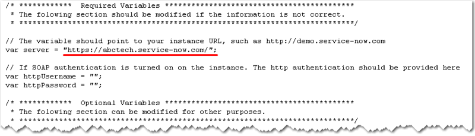

Help the Help Desk
| |
Note: This article applies to Fuji and earlier releases. For more current information, see Help the Help Desk at http://docs.servicenow.com
The ServiceNow Wiki is no longer being updated. Visit http://docs.servicenow.com for the latest product documentation. |
| |
Note: This article applies to Fuji and earlier releases. For more current information, see Configuration Management at http://docs.servicenow.com
The ServiceNow Wiki is no longer being updated. Visit http://docs.servicenow.com for the latest product documentation. |
Contents
- 1 Overview
- 2 How Help the Help Desk Identifies Devices
- 3 Help the Help Desk Versus Discovery
- 4 Configuring SOAP Authentication
- 5 Cookie-Based Authentication
- 6 Basic Access Authentication
- 7 Running the Help the Help Desk Script
- 8 Run Script with Browsers Other than Internet Explorer
- 9 Detecting Software on 64-Bit Systems
- 10 Allow Users Without ServiceNow Access to Run the Script
- 11 Run the Help the Help Desk Script Automatically
- 12 Error: Unable to parse SOAP document
- 13 Enhancements
1 Overview
Help the Help Desk is a tool that allows users to populate the CMDB automatically with information about their Windows computer. Help the Help Desk is a small Web application that downloads and runs locally, using a WMI login script to gather information such as serial number, computer name, disk configuration, network configuration, installed software, memory, and much more. Users have the option of using two types of SOAP authentication for running the Help the Help Desk script:
1.1 User Roles
Users must have the soap_ecc role to use Help the Help Desk from within an instance. For users without access to an instance, you can configure Help the Help Desk to allow users to run the script without login credentials. Users with access to an instance can also use Help the Help Desk configured in this way, but only if they have the soap_ecc role.
2 How Help the Help Desk Identifies Devices
Help the Help Desk uses a predefined series of queries to identify and update existing CIs in the CMDB or to create a new CI if no match is found. These queries attempt to match devices using the three criteria listed here, in this order. Updates to an existing CI require only a single match as the list is evaluated. For example, if a device's name has changed, but the MAC address is the same, the CI with the matching MAC address is updated.
- Serial number in the cmdb_ci_computer table
- MAC address in the cmdb_ci_network_adapter table
- Computer name in the cmdb_ci_computer table
| |
Note: Discovery Identifiers are incompatible with Help the Help Desk queries. |
2.1 Script Include
The Script Include CIIdentifierForHelpDesk provides the logic for updating existing CIs or creating a new CI if no matching device exists in the CMDB. Do not modify this script. Errors introduced into this script can result in update failures or in new CIs being created for every device found.
3 Help the Help Desk Versus Discovery
Help the Help Desk is a limited tool for finding information about hardware and software. It is not customizable and cannot identify servers unless Discovery is also running on the instance. For a more robust and customizable tool to discover servers, investigate our Discovery product. Discovery does many things that Help the Help Desk cannot do.
| Capability | Discovery | Help the Help Desk |
|---|---|---|
| Automatic discovery by schedule | |
|
| Automatic discovery on user login | |
|
| Manually initiated discovery | |
|
| Windows workstations | |
|
| Windows servers | |
|
| Linux systems | |
|
| Unix systems (Solaris, AIX, HP-UX, Mac (OSX)) | |
|
| Network devices (switches, routers, UPS, etc.) | |
|
| Printers | |
|
| Automatic discovery of computers and devices | |
|
| Automatic discovery of relationships between processes running on servers | |
|
* Returns information about Windows server machines when Discovery is installed.
4 Configuring SOAP Authentication
By default, the ServiceNow system requires SOAP authentication. This affects the way in which your browser is configured for Help the Help Desk.
- Navigate to System Properties > Web Services.
- Verify the system property for Require basic authorization for incoming SOAP requests (glide.basicauth.required.soap) is enabled.
- Click Save.
If you receive the error, There was a problem retrieving the XML data(0): Unknown, an authentication issue is preventing the script from sending information to your ServiceNow instance. Verify the user meets the requirements for cookie-based or basic authentication.
5 Cookie-Based Authentication
Cookie-based authentication uses cookies generated by Windows Internet Explorer for SOAP authentication on the instance. This type of authentication can be used to run the Help the Help Desk script at the time it is downloaded or after it has been saved to the local drive. When the script is downloaded, Internet Explorer generates a cookie using the user's ServiceNow login credentials, and then shares this cookie with the script. When a user attempts to run the script, the instance checks first for this cookie. If the cookie has been created, the script can authenticate on the instance through SOAP.
5.1 Setup
The following requirements are imposed on .hta file downloads by Microsoft.
- You must use Internet Explorer and choose to run the script while you're logged in to your ServiceNow instance. If you choose to use a different browser and download the script file to run at a later time, the script will not work properly unless you have an active session on your ServiceNow instance with Internet Explorer.
- Disable Protected Mode and User Account Control (UAC). Protected Mode is available in Internet Explorer 7 or later in Windows Vista. UAC is a feature of Windows Vista and Windows 7.
- This feature requires that your logged in user session be persisted to the Help the Help Desk script. For this to occur, the Remember me check box in the ServiceNow login screen must be enabled and selected (the default behavior). This option enables ServiceNow to write back an HTTP cookie to your browser to be persisted across sessions.
6 Basic Access Authentication
An alternative to cookie-based authentication for the Help the Help Desk script is basic access authentication, which employs two ServiceNow properties to configure the script with credentials. An administrator first creates a specific user in ServiceNow with read and write access to the ECC Queue. When a user logs in with the proper credentials, that user accesses ServiceNow in the soap_ecc role, which grants access to the ECC Queue but limits the user's access to other features. The administrator then configures the system properties with the user name and password for the soap_ecc user. The values from these properties are automatically saved to the script file (helpthehelpdesk.js). When this user runs the Help the Help Desk script, the ServiceNow instance checks for a cookie. If no cookie is found, the instance checks for the login credentials provided by the system properties and authenticates the script automatically. This functionality is available with the Spring 2010 release.
To set up basic access authentication for the Help the Help Desk script:
- Create a new user with values such as these:
- User ID: Create an easily recognizable user name such as SOAPAUTH or SOAPONLY.
- First name: SOAP
- Last name: Authentication
- Password: The password can be anything.
- Right-click the header bar and select Save from the pop-up menu.
- The record is saved, and the Related Lists appear.
- In the Roles Related List, click Edit.
- In the slushbucket, move the soap_ecc role from the Collection list to the Roles list, and then click Save.
- The completed record will resemble the following:

- Navigate to System Definition > Help the Help Desk.
- Add the user name and password you created to the appropriate properties, and then click Save.
- The password is encoded when saved.
-
- The login credentials from these properties are saved to the helpthehelpdesk.js script. When the Help the Help Desk script is run by a user logged in with these credentials (in the soap_ecc role), the script is able to authenticate automatically on the ServiceNow instance.

7 Running the Help the Help Desk Script
- On your instance, navigate to Self Service > Help the Help Desk.
- Click Start the Scan to Help the Help Desk.
- You are prompted to run or save the discovery.hta script.
- If your browser is Internet Explorer, run the script. If you are using any other browser, click Save and save the script to the local machine.
- To execute the saved script, double click the file.
- The script runs a series of WMI queries to gather information about the Windows machine. When it is done, the data is sent back to your ServiceNow instance and used to populate the configuration database (CMDB).

{kind=link}
{kind=link}
{kind=link}
7.1 Determining Values for the Assigned to Field
The following properties determine which value appears in the Assigned to field when the script is run. To set these properties, navigate to System Definition > Help the Help Desk.
- glide.wmi.assigned_to_always_overwrite: If the Help the Help Desk script is run on the same computer by different users, the platform, in the base system, overwrites the user name in the Assigned to field each time the script is run. To prevent this, set this property to false (clear the check box).
{kind=link}
- glide.discovery.assigned_user_match_field: Help the Help Desk attempts to match a Windows user name it finds with the the user_name field of the User [sys_user] table. However, this might not be desirable if the user_name field from the User [sys_user] table contains formatting that is different from that found in Windows. This property enables you to select an alternative field for matching. For example, you can create a field called u_username, and then populate it with a user ID that can be matched against the Windows user name. In this case, replace the default value in the property with u_username.
{kind=link}
7.2 Viewing Scan Results
To view the results of Help the Help Desk scans on an instance, navigate to System Definition > Help the Help Desk Status and open the daily status record . These records provide access to logs, CI records, and the ECC Queue for all scans conducted each day. Help the Help Desk status reports are also accessible from the Discovery Status list.
8 Run Script with Browsers Other than Internet Explorer
Browsers (other than IE) cannot handle files with the .hta extension. Browsers like Firefox, Safari, and Opera prompt users to download the script file, which can be double-clicked to run. However, in Windows XP (including Vista, Windows 2003 Server, and later), files downloaded from the Internet are marked with a security restriction that interferes with running the script. The typical error message introduced by this security restriction looks like this.
eccEvent(): Access Denied
To remove the security lock on the downloaded file:
- Right-click on the file downloaded and select Properties.
- The following message is displayed on the bottom of the form: This file came from another computer and may be blocked to protect this computer.
- Click the Unblock to remove the security restriction.
- The script will run if SOAP authentication is disabled. Otherwise the discussion in the previous section Run script with Basic SOAP Authorization still applies.
9 Detecting Software on 64-Bit Systems
To detect all system software successfully on a 64-bit machine, make sure to run the Help the Help Desk script from a 64-bit browser. A 64-bit browser can detect both 64-bit and 32-bit software, but a 32-bit browser cannot detect 64-bit software.
10 Allow Users Without ServiceNow Access to Run the Script
An administrator can configure the Help the Help Desk script to run without prompting for login credentials. This setup enables users who do not have access privileges to a ServiceNow instance to run the script on their Windows machines without having to provide a user name and password. The script can be configured to login in automatically as a SOAP user with the soap_ecc role.
To configure the Help the Help Desk script to run for users without prompting for a user name and password:
- Log in to your ServiceNow instance with Windows Internet Explorer.
- Navigate to System Definition > Help the Help Desk Login Script.
- Follow the download instructions in the page that appears.
- Put the helpthehelpdesk.js file in the following folder:
- %SystemRoot%\sysvol\sysvol\<domain DNS name>\scripts
- where %SystemRoot% is usually c:\winnt or c:\WINDOWS and <domain DNS name> is the DNS name of the domain, similar to MyDomain.com. This folder is replicated to all Domain Controllers in the domain.
- Open the helpthehelpdesk.js file in a text editor such as Wordpad.
- Check the var server line to ensure that the URL for your ServiceNow instance is correct. The name of the instance is added automatically. It should look something like this:
- var server = "https://abctech.service-now.com/";
- 
- Ensure that basic authorization for SOAP requests is enabled in your ServiceNow instance, and a SOAP user is defined.
- This allows the script to connect to your instance. The entry should look something like this:
- var httpUsername = "user_on_your_instance";
- var httpPassword = "user's_password";
- Make the script file available to all users.
{kind=link}
11 Run the Help the Help Desk Script Automatically
You also can configure Help the Help Desk to run automatically when users log into their computer. For more details, see Help the Help Desk Login Script.
12 Error: Unable to parse SOAP document
The Error message Error: Unable to parse SOAP document means that the Help the Help Desk script was unable to connect back to the instance to relay the information discovered.
13 Enhancements
13.1 Eureka
- Help the Help Desk lists the Operating System (OS) of the Windows CI as installed software.
- Help the Help Desk lists the version of Internet Explorer on the Windows CI as installed software.